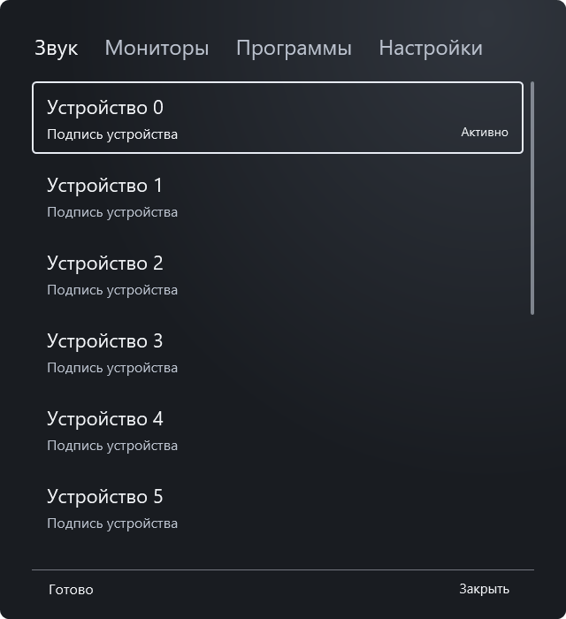
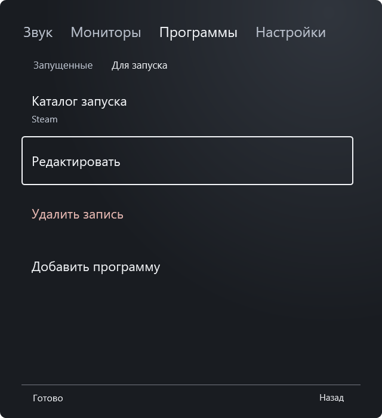
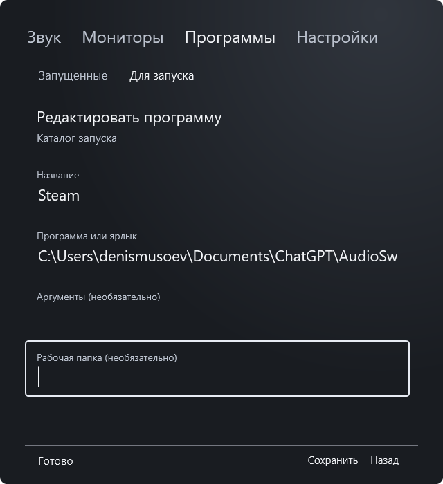
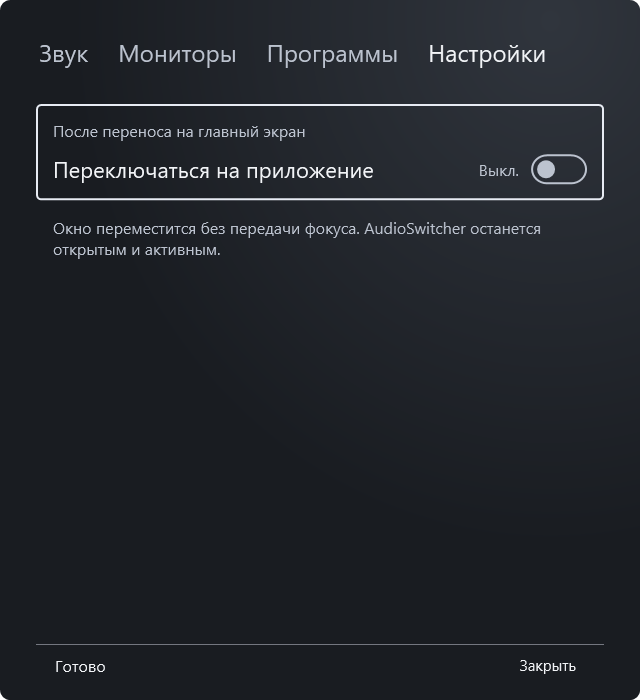

Что переносим в ТВ-версию
Снимки сделаны на тестовых данных: реальные устройства, приложения и настройки Windows не менялись.




Снимки сделаны на тестовых данных: реальные устройства, приложения и настройки Windows не менялись.



